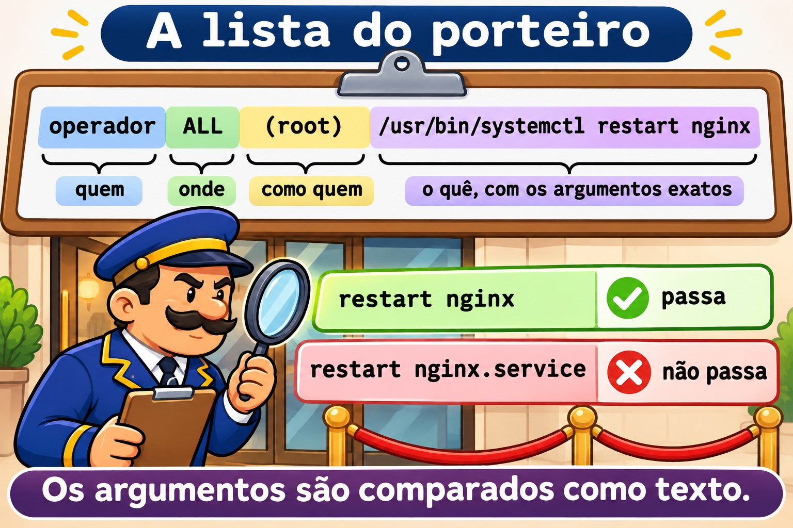
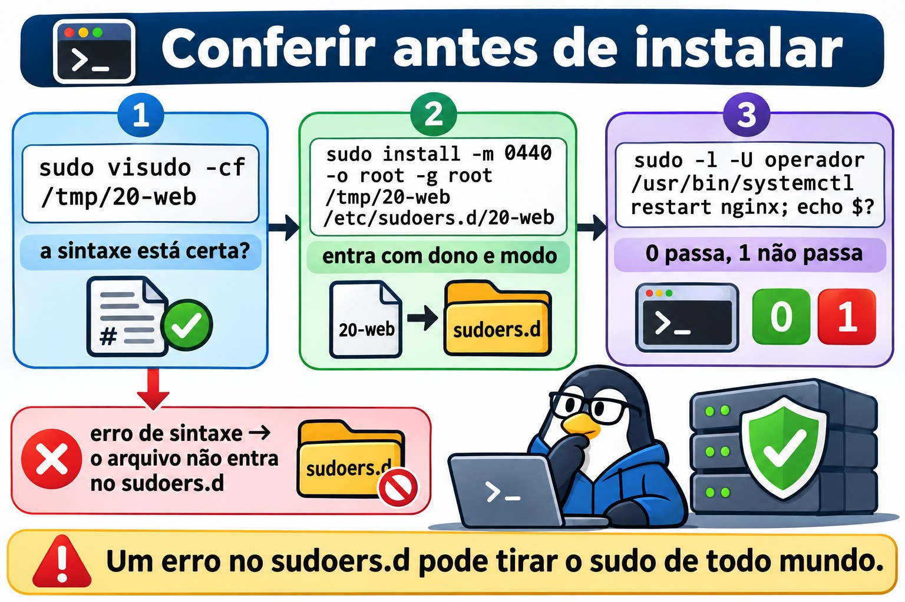
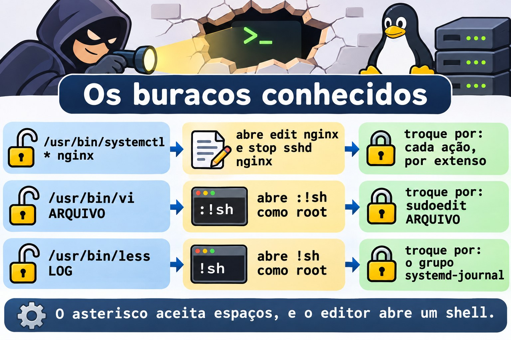
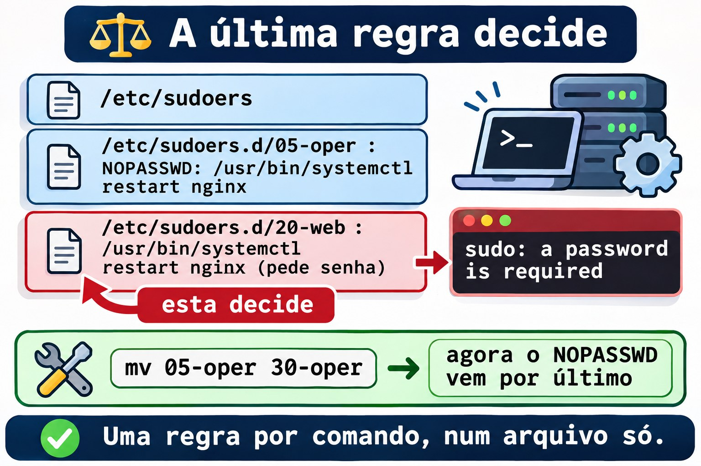

Aula 10.4 · sudo de verdade
No Windows, colocar alguém no grupo Administradores resolve na hora e entrega tudo. Para dar só uma tarefa, você monta uma delegação, ou um endpoint do JEA, com a lista exata de comandos. No Linux, o wheel (Rocky) e o sudo (Debian) são o grupo Administradores, e o sudoers é a delegação fina. Na Aula 2.5 você escreveu a primeira regra. Nesta aula você escreve regras que não abrem brechas: só os comandos e os argumentos certos, sem curinga perigoso, com edição segura de arquivo e com registro de tudo. No fim vem o Desafio do M10.
Núcleo desta aula: ler uma regra como
quem onde=(como quem) o quê; agrupar comandos numCmnd_Alias; lembrar que os argumentos têm de bater exatamente; testar uma regra comsudo -l -Uantes de usar; conferir um arquivo comvisudo -cfantes de instalar; evitar o*nos argumentos; e saber que, entre duas regras que batem, vale a última. O resto é aprofundamento.
| Ficha | |
|---|---|
| Módulo | M10 · Usuários e acesso privilegiado, aula 4 de 4, com o Desafio do módulo |
| Quando | Semana 15 |
| Ao final | Você dá a uma pessoa exatamente um comando como root, prova que nada além disso passa e acha quem tem mais acesso do que devia |
| Pré-requisitos | Aulas 2.5, 10.2 e 10.3 |
| Tempo | cerca de 2h30, mais 1h para o Desafio |
| Snapshots | m10a4-inicio e m10a4-fim na rocky-lab e na debian-lab |
1 · Aquecimento
Responda antes de ler.
- A regra permite
/usr/bin/systemctl restart nginx. O operador consegue rodarsudo systemctl restart nginx.service? - Por que dar
sudo less /var/log/securea alguém é o mesmo que darroot? - Dois arquivos do
/etc/sudoers.d/falam do mesmo comando, um comNOPASSWDe outro sem. Qual vale?
2 · Por que importa
| O chamado | A resposta errada | O que ela causa |
|---|---|---|
| "O operador precisa reiniciar o nginx" | Colocar no wheel | Ele pode tudo, inclusive apagar o servidor |
| "Deixe ele mexer só no nginx" | /usr/bin/systemctl * nginx | O * aceita edit nginx, que abre um editor como root, e stop sshd nginx |
| "Ele precisa ler os logs" | sudo less /var/log/... | Dentro do less, !sh abre um shell de root |
| "Ele precisa editar a config do site" | sudo vi /etc/nginx/... | Mesma coisa: o vi também abre shell |
| "Criei a regra e ela não funciona" | Editar o arquivo de novo, às cegas | O problema era o argumento diferente ou outra regra depois dessa |
3 · Modelo mental
Pense na lista do porteiro. Cada linha diz quem pode, em qual prédio, no lugar de quem e fazer o quê. O porteiro lê a lista inteira, de cima para baixo, arquivo por arquivo, e a última linha que combina com o pedido decide. E ele é literal: se a lista diz "abrir a sala 12", "abrir a sala 12 e a 13" não combina.
operador ALL =(root) /usr/bin/systemctl restart nginx
quem onde como o quê, com os argumentos exatos
leitura: /etc/sudoers → /etc/sudoers.d/ em ordem alfabética (05-..., 20-..., 30-...)
decisão: a última linha que combina com quem, onde, como e o quê

Ponte Windows
| No Windows | No Linux | Onde a comparação engana |
|---|---|---|
| Grupo Administradores | wheel (Rocky) e sudo (Debian) | Quem está nele pode tudo, com a própria senha |
| "Executar como administrador" (UAC) | sudo comando | O sudo pede a senha de quem chama, e não a do root |
| JEA, com a lista de comandos permitidos | Cmnd_Alias e uma regra no sudoers.d | Os argumentos são comparados como texto: um a mais e não passa |
| Log de segurança (4688, 4672) | journalctl _COMM=sudo e /var/log/secure | Cada sudo vira uma linha, aceito ou negado |
| Política aplicada por GPO | Arquivo no /etc/sudoers.d/ | Um erro de sintaxe pode tirar o sudo de todo mundo: confira antes |
4 · O essencial
A regra
| Parte | Exemplo | Significa |
|---|---|---|
| Quem | operador, %web | Uma conta, ou um grupo com % |
| Onde | ALL | Em qualquer máquina que use este arquivo |
| Como quem | (root) | Roda como root; (ALL) deixa escolher qualquer um |
| Opções | NOPASSWD: | Não pede senha |
| O quê | /usr/bin/systemctl restart nginx | Caminho completo e argumentos exatos |
Cmnd_Alias WEB_OPER = /usr/bin/systemctl restart nginx, /usr/bin/systemctl reload nginx
operador ALL=(root) WEB_OPEROs argumentos são comparados como texto: restart nginx não aceita restart nginx.service nem restart nginx sshd. Um comando sem argumentos na regra aceita qualquer argumento; para proibir todos, escreva "" depois do comando.
E o status? Ele não precisa de sudo: qualquer usuário roda systemctl status nginx. Não dê por sudo o que a pessoa já pode fazer sem ele.
Conferir antes de instalar
sudo visudo -cf /tmp/20-web
sudo install -m 0440 -o root -g root /tmp/20-web /etc/sudoers.d/20-web
sudo -l -U operador
sudo -l -U operador /usr/bin/systemctl restart nginx; echo $?O visudo -cf confere a sintaxe de um arquivo antes que ele chegue ao sudoers.d. O sudo -l -U mostra as regras de outra pessoa; com um comando no fim, responde se aquele comando passa (código 0) ou não (código 1), sem rodar nada.


Os buracos conhecidos
| Dar isto | Abre | Dar isto no lugar |
|---|---|---|
/usr/bin/systemctl * nginx | edit nginx e stop sshd nginx | Cada ação, por extenso |
/usr/bin/vi ARQUIVO | :!sh como root | sudoedit ARQUIVO |
/usr/bin/less LOG | !sh como root | O grupo systemd-journal (ou adm no Debian) |
Um script em /home/operador/ | Ele mesmo edita o script | Script do root, em /usr/local/sbin/, modo 0755 |
(ALL) no "como quem" | Rodar como qualquer conta | (root) ou a conta do serviço |
O sudoedit copia o arquivo para uma pasta temporária, abre o editor como a própria pessoa e só grava de volta, como root, quando ela sai do editor. Um :!sh dentro dele abre um shell da pessoa, e não do root.


Opções úteis
| Opção | Faz |
|---|---|
Defaults:operador timestamp_timeout=5 | A senha vale por 5 minutos para ele |
Defaults logfile=/var/log/sudo.log | Um log só do sudo, além do journal |
Defaults:operador log_output | Grava a saída de cada comando; o sudoreplay reproduz |
NOEXEC: antes do comando | Impede o comando de abrir outros programas, quando funciona |
Rocky × Debian
| Rocky | Debian | |
|---|---|---|
| Grupo de administradores | wheel | sudo |
Inclusão do sudoers.d | #includedir /etc/sudoers.d | @includedir /etc/sudoers.d |
systemctl | /usr/bin/systemctl | /usr/bin/systemctl |
nginx | sudo dnf install -y nginx e systemctl enable --now nginx | sudo apt install -y nginx (já sobe sozinho) |
Log do sudo | /var/log/secure e o journal | O journal, e o /var/log/auth.log, se houver |
| Grupo de leitura de logs | systemd-journal | systemd-journal e adm |
5 · Lab guiado
Passo 0 · Snapshots e estado. No Proxmox: qm snapshot 201 m10a4-inicio e qm snapshot 202 m10a4-inicio. Na rocky-lab:
sudo ls -l /etc/sudoers.d/
getent group wheel
sudo visudo -cO visudo -c confere todos os arquivos e termina com parsed OK em cada um. Anote o que já existe no sudoers.d: você vai deixar igual no fim.
Passo 1 · O nginx e a lista principal.
sudo dnf install -y nginx
sudo systemctl enable --now nginx
systemctl is-active nginx
sudo grep -vE '^\s*$|^#( |#|$)' /etc/sudoersO grep tira os comentários e deixa o #includedir, que não é comentário. Sobram os Defaults, a linha do root, a do %wheel e o #includedir /etc/sudoers.d. Leia a do %wheel com a tabela da seção 4: quem está no grupo, em qualquer máquina, como qualquer conta, qualquer comando.
Passo 2 · O operador.
sudo useradd -u 2410 -c "Operador Web" -m -s /bin/bash operador
sudo passwd operador
id operadorDê uma senha que passe na política da Aula 10.2 e anote no caderno do lab. O operador não está no wheel: por enquanto, ele não tem sudo nenhum.
sudo -l -U operadorA resposta diz que ele não pode rodar sudo nesta máquina.
Passo 3 · A regra, conferida antes de instalar.
cat > /tmp/20-web <<'FIM'
Cmnd_Alias WEB_OPER = /usr/bin/systemctl restart nginx, /usr/bin/systemctl reload nginx
operador ALL=(root) WEB_OPER
FIM
sudo visudo -cf /tmp/20-web
sudo install -m 0440 -o root -g root /tmp/20-web /etc/sudoers.d/20-web
rm /tmp/20-web
sudo visudo -c
sudo -l -U operadorO visudo -cf responde parsed OK, e só então o arquivo entra no sudoers.d, já com dono e modo certos. O sudo -l -U agora lista os dois comandos, como (root).
Passo 4 · Testar sem rodar.
sudo -l -U operador /usr/bin/systemctl restart nginx; echo $?
sudo -l -U operador /usr/bin/systemctl restart nginx.service; echo $?
sudo -l -U operador /usr/bin/systemctl stop nginx; echo $?O primeiro imprime o caminho do comando e 0. Os outros dois terminam em 1: nginx.service não é o texto da regra, e stop não está nela.
Passo 5 · Agora como o operador.
su - operador
sudo systemctl restart nginx
systemctl status nginx --no-pager | head -n 5
sudo systemctl restart nginx.service
sudo systemctl stop nginx
exitO sudo pede a senha do operador, uma vez. O restart funciona, e o status roda sem sudo. Os dois últimos respondem algo como Sorry, user operador is not allowed to execute '/usr/bin/systemctl stop nginx' as root on rocky-lab.
Passo 6 · O registro.
sudo journalctl _COMM=sudo --since '-10min' --no-pager | grep operadorCada tentativa virou uma linha, com TTY, PWD, USER=root e o COMMAND. As negadas trazem command not allowed. É isso que você mostra numa auditoria.
Passo 7 · O curinga, só olhando. Instale uma regra ruim por um instante e pergunte ao sudo, sem rodar:
echo 'operador ALL=(root) /usr/bin/systemctl * nginx' > /tmp/25-curinga
sudo visudo -cf /tmp/25-curinga
sudo install -m 0440 -o root -g root /tmp/25-curinga /etc/sudoers.d/25-curinga
sudo -l -U operador /usr/bin/systemctl edit nginx; echo $?
sudo -l -U operador /usr/bin/systemctl stop sshd nginx; echo $?
sudo rm /etc/sudoers.d/25-curinga /tmp/25-curingaOs dois passam, com 0. O edit abre um editor como root, e de lá sai um shell. O segundo derruba o sshd. A sintaxe estava certa; a regra é que estava errada. Não rode esses comandos.
Passo 8 · Editar com segurança.
sudo install -m 0644 /dev/null /etc/nginx/conf.d/curso.conf
echo 'operador ALL=(root) sudoedit /etc/nginx/conf.d/curso.conf, /usr/sbin/nginx -t' > /tmp/21-web-conf
sudo visudo -cf /tmp/21-web-conf
sudo install -m 0440 -o root -g root /tmp/21-web-conf /etc/sudoers.d/21-web-conf
rm /tmp/21-web-conf
su - operador
sudoedit /etc/nginx/conf.d/curso.confO editor abre um arquivo temporário. Escreva uma linha # editado pelo operador, grave e saia. Ainda como operador:
sudo /usr/sbin/nginx -t
sudo systemctl reload nginx
cat /etc/nginx/conf.d/curso.conf
exitO nginx -t responde syntax is ok e test is successful, e o arquivo tem a linha nova. O operador editou um arquivo do root sem nunca ter um editor rodando como root.
Passo 9 · Auditar quem pode o quê.
getent group wheel
for u in $(getent passwd | awk -F: '$3 >= 1000 && $3 < 60000 {print $1}'); do
echo "== $u"; sudo -l -U "$u" | sed -n '/may run/,$p'
doneCada pessoa aparece com o que pode, ou sem linha nenhuma, se não pode nada. O student tem (ALL) ALL, pelo wheel; o operador, só os três comandos dele.
Passo 10 · debian-lab. Repita os passos 0 a 9. Instale com sudo apt install -y nginx, e no Passo 9 troque wheel por sudo.
Decida 1
Pedem que o operador possa parar, iniciar, reiniciar e recarregar o nginx. Qual regra?
A) operador ALL=(root) /usr/bin/systemctl * nginx. B) Um Cmnd_Alias com as quatro ações por extenso. C) operador ALL=(root) /usr/bin/systemctl.
Marque uma opção antes.
| Se você marcou | Resultado | Por quê |
|---|---|---|
| A | Perigoso | O * aceita espaços: edit nginx e stop sshd nginx passam |
| B | Certo | Só as quatro linhas, com o texto exato |
| C | Muito perigoso | Sem argumentos na regra, qualquer argumento passa: o operador para o servidor inteiro |
Para fixar: escreva cada comando por extenso; o * nos argumentos aceita mais do que parece.
Decida 2
O operador precisa ler os logs do nginx. Como?
A) operador ALL=(root) /usr/bin/less /var/log/nginx/error.log. B) Colocar o operador no grupo que lê os logs (systemd-journal, e adm no Debian) e usar journalctl -u nginx. C) chmod 644 em todos os logs.
Marque uma opção antes.
| Se você marcou | Resultado | Por quê |
|---|---|---|
| A | Perigoso | Dentro do less, !sh abre um shell de root |
| B | Certo | Ele lê sem sudo; nada roda como root |
| C | Fraco | Todo mundo passa a ler, e a próxima rotação de log desfaz |
Para fixar: acesso de leitura se dá por grupo, e não por sudo.
6 · Quebre e conserte
Quebra 1 · O caminho incompleto
echo 'operador ALL=(root) systemctl restart nginx' > /tmp/22-ruim
sudo visudo -cf /tmp/22-ruim; echo $?Sintoma: o visudo recusa o arquivo, com código 1 e uma mensagem de erro de sintaxe que aponta a linha e a coluna; nas versões atuais, ela diz que esperava um caminho completo.
Investigação: a coluna indicada é a do systemctl.
Causa: o sudoers exige o caminho completo do comando. Sem ele, qualquer systemctl que a pessoa pusesse no PATH serviria.
Conserto: command -v systemctl dá o caminho; corrija para /usr/bin/systemctl. E repare no que não aconteceu: como você conferiu antes de instalar, o sudoers.d nunca recebeu o arquivo ruim. Apague: rm /tmp/22-ruim.
Quebra 2 · O operador que pode tudo
sudo usermod -aG wheel operador
sudo -l -U operador | sed -n '/may run/,$p'No Debian, use o grupo sudo.
Sintoma: além dos três comandos, aparece (ALL) ALL.
Investigação: id operador mostra o wheel. A regra do 20-web continua certa: o que abriu tudo foi a linha %wheel do /etc/sudoers.
Causa: alguém "resolveu rápido" um chamado. É o achado mais comum em auditoria de sudo.
Conserto: sudo gpasswd -d operador wheel e sudo -l -U operador de novo. Se ele tinha uma sessão aberta, ela ainda carrega o wheel (Aula 10.3): encerre com sudo loginctl terminate-user operador.
Quebra 3 · O NOPASSWD que não vale
echo 'operador ALL=(root) NOPASSWD: /usr/bin/systemctl restart nginx' > /tmp/05-oper
sudo visudo -cf /tmp/05-oper
sudo install -m 0440 -o root -g root /tmp/05-oper /etc/sudoers.d/05-oper
sudo -u operador sudo -k
sudo -u operador sudo -n /usr/bin/systemctl restart nginx; echo $?O sudo -k apaga a senha que o operador já tinha digitado, e o -n proíbe o sudo de pedir senha.
Sintoma: sudo: a password is required, com código 1, mesmo com o NOPASSWD.
Investigação: sudo -l -U operador lista as duas regras: a do 05-oper, com NOPASSWD, e a do 20-web, sem.
Causa: os arquivos são lidos em ordem alfabética, e a última regra que combina decide. O 20-web vem depois do 05-oper.
Conserto: mude a ordem e teste de novo; agora o código é 0:
sudo mv /etc/sudoers.d/05-oper /etc/sudoers.d/30-oper
sudo -u operador sudo -n /usr/bin/systemctl restart nginx; echo $?
sudo rm /etc/sudoers.d/30-oper /tmp/05-operO conserto que dura é outro: uma regra só por comando, num arquivo só.


Limpeza
sudo rm /etc/sudoers.d/20-web /etc/sudoers.d/21-web-conf
sudo rm /etc/nginx/conf.d/curso.conf
sudo systemctl reload nginx
sudo userdel -r operador
sudo ls -l /etc/sudoers.d/
sudo visudo -cO sudoers.d volta ao que você anotou no Passo 0. O nginx fica instalado: o Desafio precisa dele.
7 · Armadilhas
| Armadilha | O que acontece | Como evitar |
|---|---|---|
Editar o sudoers.d direto, sem conferir | Um erro de sintaxe tira o sudo de todos | visudo -cf num arquivo temporário, depois install |
* nos argumentos | Passa muito mais do que você queria | Cada comando por extenso |
| Comando sem argumentos na regra | Qualquer argumento passa | Argumentos explícitos, ou "" para nenhum |
sudo para editor, less ou more | Shell de root | sudoedit e grupos de leitura |
(ALL) no "como quem" | A pessoa roda como qualquer conta | (root) ou a conta do serviço |
| Dois arquivos com regras do mesmo comando | Vale o último em ordem alfabética | Uma regra por comando |
Pessoa no wheel "só por hoje" | Fica para sempre | Auditoria com sudo -l -U |
| Testar só com a sua conta | Você tem ALL e tudo funciona | sudo -l -U NOME COMANDO e um teste como a pessoa |
8 · Quiz
Responda sem olhar. O gabarito está no fim da aula.
- Quais são as partes de
operador ALL=(root) /usr/bin/systemctl restart nginx? - O que o
sudo -l -U operador /usr/bin/systemctl stop nginxresponde, e por que ele é seguro? - Por que
/usr/bin/systemctl * nginxé uma regra perigosa? - O que o
sudoeditfaz de diferente desudo vi? - Dois arquivos do
sudoers.ddão regras diferentes para o mesmo comando. Qual vale? - Por que conferir com
visudo -cfantes de copiar o arquivo para osudoers.d?
9 · Cola
Para saber de cor:
| Quero... | Comando |
|---|---|
| Conferir um arquivo novo | sudo visudo -cf ARQUIVO |
| Instalar com dono e modo | sudo install -m 0440 -o root -g root ARQUIVO /etc/sudoers.d/NN-nome |
| Conferir tudo | sudo visudo -c |
| Ver as regras de alguém | sudo -l -U NOME |
| Testar um comando sem rodar | sudo -l -U NOME /caminho/comando args; echo $? |
| Ver o registro | sudo journalctl _COMM=sudo --since '-1h' |
Para consultar:
| Quero... | Comando |
|---|---|
| Lista principal sem comentários | sudo grep -vE '^\s*$|^#( |#|$)' /etc/sudoers |
| Agrupar comandos | Cmnd_Alias NOME = /cmd1 args, /cmd2 args |
| Editar arquivo protegido | NOME ALL=(root) sudoedit /caminho/arquivo |
| Esquecer a senha digitada | sudo -k |
| Testar sem pedir senha | sudo -n comando |
| Quem é administrador | getent group wheel (Rocky) e getent group sudo (Debian) |
Flashcards:
- Regra → quem, onde, como quem, o quê.
- Argumentos → comparados como texto.
- Sem argumentos → qualquer argumento.
*→ aceita espaços.- Duas regras → vale a última.
sudoedit→ o editor roda como você.
10 · Checklist e fechamento
- [ ] Leio uma regra do
sudoersparte por parte - [ ] Escrevo um
Cmnd_Aliascom argumentos exatos - [ ] Confiro com
visudo -cfe instalo cominstall -m 0440 - [ ] Testo uma regra com
sudo -l -Usem rodar o comando - [ ] Reconheço curingas, editores e paginadores perigosos
- [ ] Dou edição segura com
sudoedit - [ ] Audito quem tem
sudoe o que pode
Último exercício, sem olhar a aula: na debian-lab, dê à Ana o direito de rodar só /usr/bin/systemctl reload nginx, sem senha. Prove com sudo -u ana sudo -n que o reload passa e o restart não. Apague a regra.
Snapshot de fim (no Proxmox):
qm snapshot 201 m10a4-fim
qm snapshot 202 m10a4-fim11 · Na vida real
Missão, só leitura. Num servidor Linux que você administre (ou com autorização), rode apenas:
getent group wheel sudo
sudo ls -l /etc/sudoers.d/
sudo grep -rhvE '^\s*$|^#( |#|$)' /etc/sudoers /etc/sudoers.d/
sudo journalctl _COMM=sudo --since '-7d' --no-pager | grep -c 'command not allowed'Perguntas para responder:
- Quantas pessoas estão no grupo de administradores? Todas precisam?
- Alguma regra tem
*nos argumentos, um editor, um paginador ouNOPASSWD: ALL? - Quantas negações houve na última semana? De quem?
12 · Aprofundar quando quiser
man sudoers: a gramática completa, os curingas,Defaults,NOEXECe a ordem das regras.man sudoreplay: reproduzir uma sessão gravada comlog_output.man sudoedit: como a edição segura funciona e as pastas que ela recusa.- GTFOBins: uma lista pública de programas que abrem shell quando rodam por
sudo. Consulte antes de liberar qualquer programa.
DeepTutor (http://10.1.0.149:3782, KB "Curso Linux Sysadmin"):
!explica uma regra do sudoers com a metáfora da lista do porteiro!feynman por que um curinga nos argumentos do sudo é perigoso!quiz Aula 10.4, 5 perguntas sobre sudoers, sudoedit e auditoria
Desafio do M10 · A equipe de plantão
A missão: na rocky-lab, monte a equipe de plantão: três pessoas, uma pasta comum, uma política de senha e uma pessoa que só pode reiniciar o nginx. Tudo por um script que pode rodar de novo sem estragar nada.
Sem passo a passo. As dicas estão no Gabarito.
Antes de começar: no Proxmox, qm snapshot 201 m10-desafio-inicio.
Requisitos:
- Grupo
plantaocom GID 2400. Contasdora(2401),edu(2402) efabi(2403), com grupo pessoal como principal,plantaocomo suplementar, pasta pessoal e Bash. - Pasta
/srv/plantao, do grupoplantao, em que os três criam e editam os arquivos uns dos outros, e mais ninguém entra. - A Dora administra o grupo
plantao, semsudo. - As senhas dos três vencem em 90 dias, com 1 dia mínimo entre trocas e aviso 14 dias antes. Cada um recebe uma senha provisória e tem de trocá-la no primeiro acesso.
- A Fabi pode rodar como
rootsó/usr/bin/systemctl restart nginx, com a própria senha. A Dora e o Edu não têmsudo. - Os requisitos 1, 2, 3, 5 e a validade do requisito 4 saem de um script
~/m10-desafio.sh, que roda comoroot, pode rodar duas vezes seguidas sem erro e não duplica nada.
Critérios de aceite:
- [ ]
sudo bash ~/m10-desafio.shroda duas vezes seguidas sem erro - [ ]
getent group plantaomostra os três, esudo getent gshadow plantaomostra a Dora como administradora - [ ]
sudo chage -l edumostra 90, 1 e 14, epassword must be changed - [ ]
sudo -u dora bash -c 'umask 002; echo escala > /srv/plantao/escala.txt'esudo -u edu bash -c 'echo troca >> /srv/plantao/escala.txt'funcionam - [ ]
sudo -l -U fabimostra só orestartdo nginx;sudo -l -U fabi /usr/bin/systemctl stop nginx; echo $?dá1 - [ ]
sudo -l -U doraesudo -l -U edudizem que eles não podem usarsudo - [ ]
sudo visudo -cnão mostra erro
Ao terminar:
sudo rm /etc/sudoers.d/30-plantao
for u in dora edu fabi; do sudo userdel -r "$u"; done
sudo rm -r /srv/plantao
sudo groupdel plantaoNo Proxmox: qm snapshot 201 m10-desafio-fim.
Você fechou o M10. Agora você gerencia contas de pessoas e de serviços, muda nomes e números sem deixar arquivo órfão, define e aplica política de senha, organiza grupos com delegação e dá acesso privilegiado na medida exata, com registro. O próximo módulo está no plano do curso.
Gabarito comentado
Aquecimento
- Não. Os argumentos são comparados como texto, e
nginx.servicenão énginx. - Porque o
lessroda comoroote aceita!sh, que abre um shell com o mesmo usuário:root. - O que vier por último em ordem alfabética: a última regra que combina decide.
Quiz
operadoré quem;ALLé onde;(root)é como quem;/usr/bin/systemctl restart nginxé o quê, com os argumentos exatos.- Responde se o comando passa (imprime o caminho, código 0) ou não (código 1). É seguro porque só consulta a política: nada roda.
- Porque o
*aceita qualquer texto, inclusive espaços: passamedit nginx, que abre um editor comoroot, estop sshd nginx. - O
sudoeditabre o editor como a própria pessoa, numa cópia, e só grava o arquivo comorootno fim. Comsudo vi, o editor inteiro roda comoroot, e um:!shvira shell deroot. - O que é lido por último, em ordem alfabética, porque a última regra que combina decide.
- Porque um erro de sintaxe num arquivo do
sudoers.dpode fazer osudorecusar tudo, inclusive para você. Conferindo antes, o arquivo ruim nunca chega lá.
Dicas do Desafio
Leia uma de cada vez.
- Rodar de novo sem erro: antes de criar, pergunte se já existe:
getent group plantao >/dev/null || groupadd -g 2400 plantao, e o mesmo comgetent passwdantes de cadauseradd. Oinstall -d, ochage -Me ogpasswd -Apodem rodar de novo sem problema. - A pasta:
install -d -m 2770 -o root -g plantao /srv/plantao. Oumask 002do critério de aceite faz o papel do login (Aula 2.8). - A regra: escreva num arquivo temporário (
mktemp), confira comvisudo -cfe instale cominstall -m 0440como/etc/sudoers.d/30-plantao. Se ovisudorecusar, oset -epara o script antes de instalar. - A ordem das senhas: primeiro
passwdpara cada um, depoischage -d 0. Ao contrário, opasswdgrava a data de hoje como última troca e desfaz ochage -d 0. Por isso as senhas provisórias ficam fora do script. - Um script possível:
#!/bin/bash
set -euo pipefail
getent group plantao >/dev/null || groupadd -g 2400 plantao
for linha in dora:2401 edu:2402 fabi:2403; do
nome=${linha%%:*}
uid=${linha##*:}
getent passwd "$nome" >/dev/null || useradd -u "$uid" -m -s /bin/bash -G plantao "$nome"
chage -M 90 -m 1 -W 14 "$nome"
done
install -d -m 2770 -o root -g plantao /srv/plantao
gpasswd -A dora plantao
regra=$(mktemp)
echo 'fabi ALL=(root) /usr/bin/systemctl restart nginx' > "$regra"
visudo -cf "$regra" >/dev/null
install -m 0440 -o root -g root "$regra" /etc/sudoers.d/30-plantao
rm -f "$regra"Depois do script: sudo passwd dora e sudo chage -d 0 dora, e o mesmo para o Edu e a Fabi.